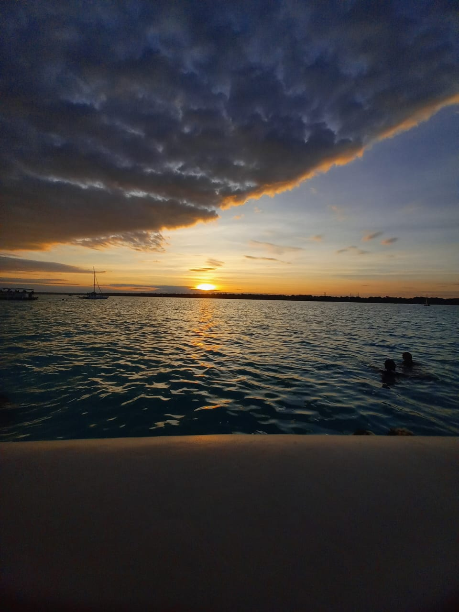
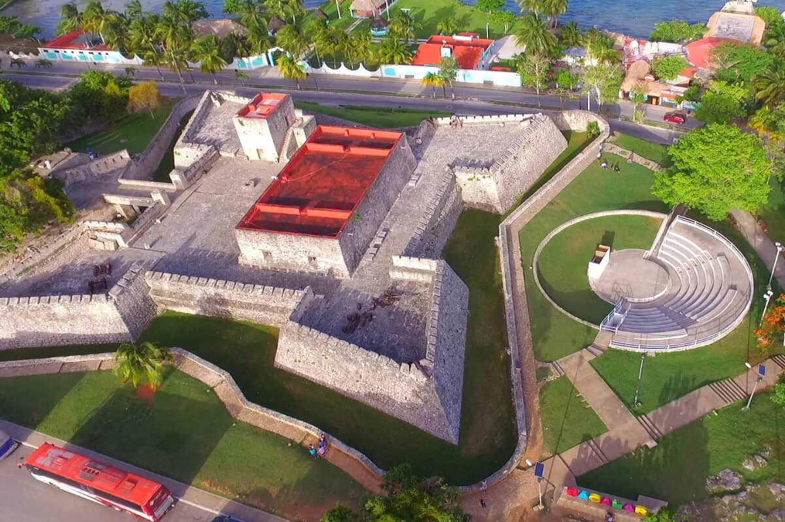

"Laguna de los 7 colores,
Bacalar, Quintana Roo,
México".
Bacalar, Quintana Roo,
México".

Bacalar
Acerca de Bacalar
Bacalar, fue fundado por los mayas hacia el año 415 d.C. con la palabras mayas Sian Ka’an Bakhalal, significa “cerca o rodeado de carrizos”, como se le conocio en un inicio a este lugar. Se incorporó al programa Pueblos Mágicos en el año 2006
¿Cómo puedes llegar?
Bacalar se encuentra situado a 40 km al norte de Chetumal capital del estado de Quintana Roo. Así mismo, los aeropuertos más cercanos a Bacalar son: el Aeropuerto Internacional de Chetumal a 30 min y el Aeropuerto Internacional de Cancún a 4 Hrs de Bacalar.
Acerca de La laguna de los 7 colores
Puedes encontrar en ella hermosos paisajes; gracias a sus siete tonalidades del azul, así como también espacios para nadar comodos y seguros para adultos y niños. Además, está laguna también es el lugar ideal para conocer y observar los cenotes al aire libre,
ya que estos cenotes son diferentes a los cenotes que puedes encontrar en la Penísula de Yucatán.